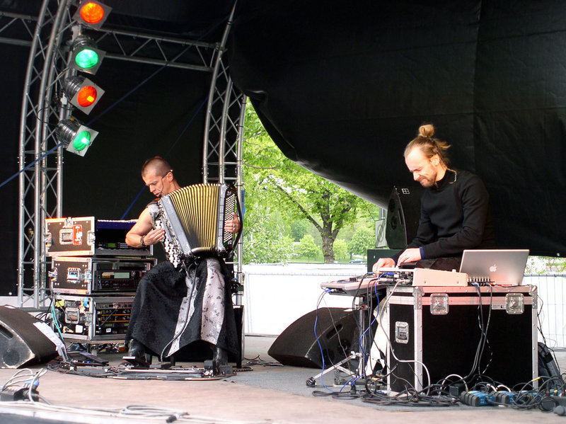

Киммо Похьонен родился в семье аккордеониста. В возрасте десяти лет сам начал играть на кнопочном аккордеоне. Окончив Консерваторию в Хельсинки (1980—1985), продолжил изучать классическую и народную музыку в Академии Сибелиуса (1985—1996). Кроме того, в 1985—1992 годах учился в Bagamoyo College of Arts (Танзания) и в 1994 году в Буэнос-Айресе (Аргентина).
Играя время от времени в местных поп- и рок-группах (см. в дискографии: Toni Rossi And Sinitaivas), Похьонен был замечен и приглашен в фолк-группу Ottopasuuna, в 1998 году он на короткое время присоединился к рок-группе Ismo Alanko Säätiö, после чего начал сольную работу, успевая участвовать в студийной и концертной работе дуэта Pinnin Pojat (совместный проект Киммо Похьонена и скрипача Arto Jarvela). В марте 1999 года вышел его дебютный альбом «Kielo». Он быстро получил в прессе статус лучшего альбома года. Пластинки издавались на местном лейбле Rockadillo и переиздавались в Германии на лейбле West Park. Весной 2000 года Похьонен поучаствовал с оркестром Tapiola Sinfonietta в оригинальном свето-музыкальном проекте Kalmusikkisin Fonia (три концерта состоялись в Savoy Theater в Хельсинки, результаты опубликованы в формате CD/DVD, пластинка "Kalmuk" (2002)). В 2001 году к Похьонену присоединился его знакомый по Консерватории Самули Косминен, также участвовавший в работе над «Kalmuk», и экспрессия выступлений выходит на следующий уровень. Едва ли не главный финский перкуссионист, Косминен успел поиграть в доброй половине финских групп, пробуя себя в роке, попе, джазе и электронике. Свой звук он нашёл в 1998 году, играя с Похьоненом в трио Broken Windows, семплируя собственные ударные и обогащая саунд электронными эффектами. После выпуска пластинки «Kluster» удачно найденная форма сотрудничества была переименована в одноименный тандем. На отдельных выступлениях к ним присоединяется Abdissa «Mamba» Assefa — ещё один финский перкуссионист-виртуоз. Двойной дуэт Kluster с музыкантами King Crimson Треем Ганном и Пэтом Мастелотто (двое последних выступают отдельно под названием TU) получил лаконичное название KTU. В этом составе группа выступает, по результатам концертов в Токио в 2004 году выпущен диск «8 Armed Monkey». Весной 2006 года Kluster выступил вместе с новым финским струнным арт-проектом Proton Quartet. С 2014 года снова выступает с французским барабанщиком Эриком Эшампаром (Eric Echampard).